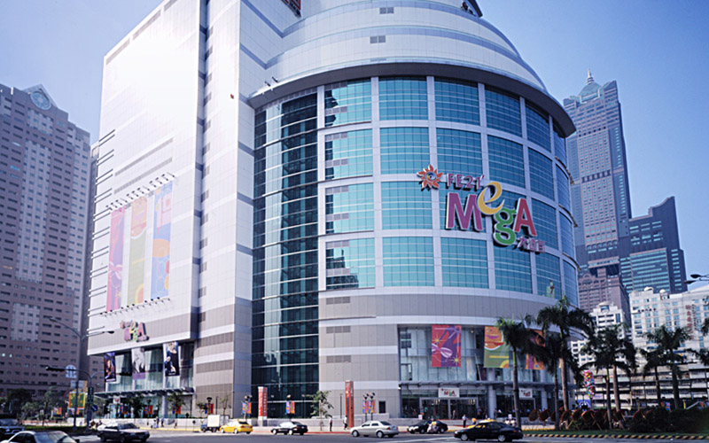
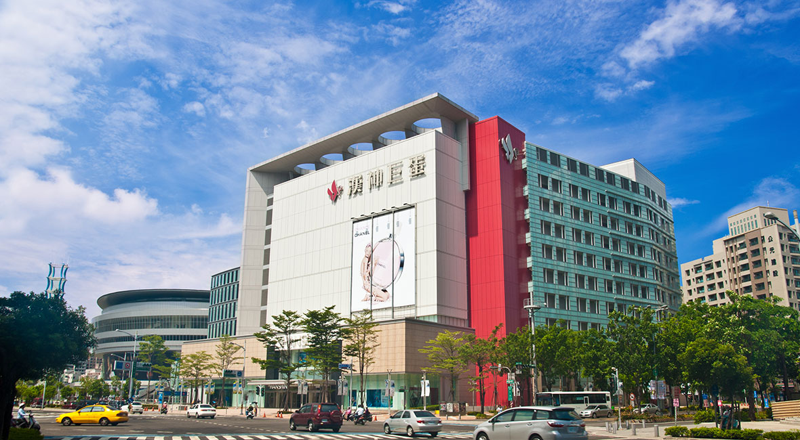
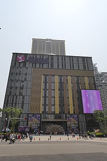

|  |  |  | |
| 高雄大遠百 | 漢神巨蛋購物廣場 | 義享天地 | 研習心得 |
施工階段
地基工程：採用了深基礎施工技術，以確保建築的穩定性和抗震性能。地基工程特別強調穩定性，使用了先進的地基處理技術。
結構施工：結構施工主要採用鋼筋混凝土結構，並結合鋼結構的優點，既提供了強度又保持了靈活性。
裝修與內部設計：內部裝修追求高品質，選用環保材料，公共區域設計寬敞明亮，商鋪和娛樂設施布局合理，提升顧客的購物和娛樂體驗。
環保與節能
綠建築設計：在設計過程中融入了多項環保和節能技術，如高效節能的空調系統、節能照明系統以及綠化空間設計，降低了建築對環境的影響。
水資源管理：設計了雨水收集和廢水再利用系統，有效利用水資源，減少對環境的影響。